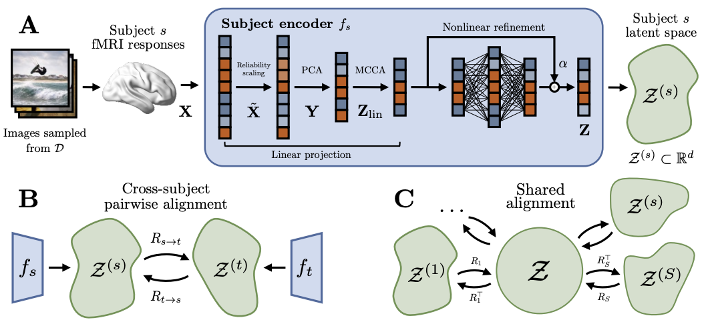

Platonic Representations in the Human Brain: Unsupervised Recovery of Universal Geometry
Preprint | Pablo Marcos-Manchón, Rishi Jha, Lluís Fuentemilla
The Strong Platonic Representation Hypothesis suggests that representational convergence in artificial neural networks can be harnessed constructively: embeddings can be translated across models through a universal latent space without paired data. We ask whether an analogous geometry can be recovered across human brains. Using fMRI data from the Natural Scenes Dataset, we propose a self-supervised encoder that learns subject-specific embeddings from brain data alone by exploiting repeated stimulus presentations. We show that these independently learned spaces can be translated across subjects using unsupervised orthogonal rotations, without paired cross-subject samples or intermediate model representations. Synchronizing pairwise rotations into a single shared latent space further improves cross-subject retrieval, indicating that subject-specific spaces are mutually compatible with a common coordinate system. These results provide evidence for a shared neural geometry in the human visual cortex: subject-specific fMRI representations are approximately isometric across individuals and can be translated through purely geometric transformations.
